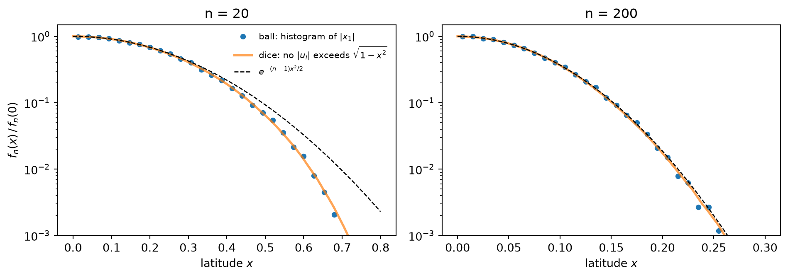
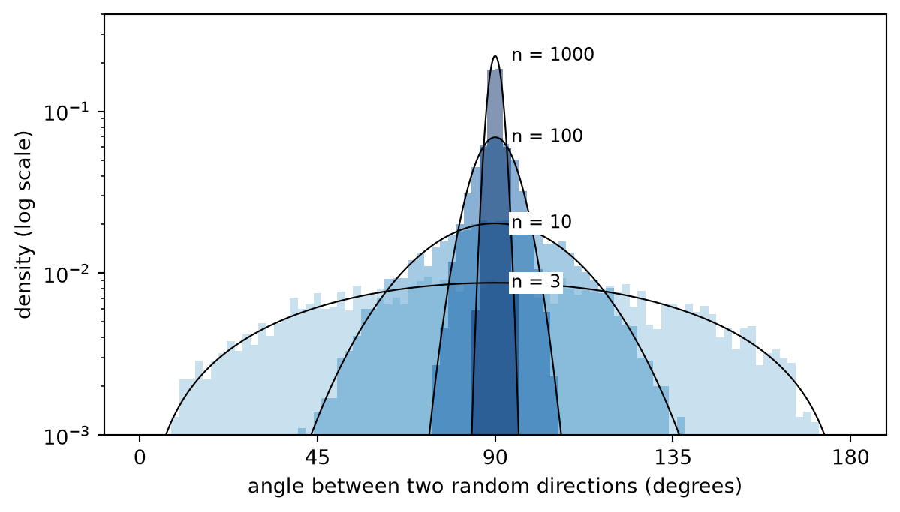

Pick a point uniformly at random in the unit ball of \(\mathbb R^n\). In high dimension two strange things happen. For any fixed \(\delta > 0\), the probability that the point is within \(\delta\) of the surface, and within \(\delta\) of the equator, tends to 1 exponentially fast in \(n\). Not one particular equator, but any one you choose, and even hundreds of them at once.
Below I derive the distribution of the “latitude” in two ways. The first slices the ball. The second starts from a question that seems unrelated: what is the probability that none of \(n\) independent uniform numbers exceeds \(1-\varepsilon\)? At the end I check everything with Monte Carlo.
Setup
Let \(x\) be a uniform point in the unit ball \(B^n = \{x : |x| \le 1\}\). Its distribution does not change under rotations.
Fix a “north pole”, a unit vector \(e\). By rotational symmetry the choice does not matter, so take \(e = e_1\). The equator is the hyperplane \(\{x_1 = 0\}\), and the latitude of a point is its coordinate \(x_1\). “Being close to the equator” means lying in the slab \(|x_1| < \delta\).
In \(\mathbb R^3\) the equator of \(S^2\) is a circle \(S^1\), which feels like very little. But in \(\mathbb R^n\) the equator of \(S^{n-1}\) is an \(S^{n-2}\). It only loses one dimension out of \(n\), and in \(\mathbb R^{1000}\) losing one direction out of a thousand is losing almost nothing.
Route 1: slicing
Slice the ball at \(x_1 = x\). The slice is an \((n-1)\)-dimensional ball of radius \(\sqrt{1-x^2}\), whose volume is proportional to \((1-x^2)^{\frac{n-1}{2}}\). So the latitude has density
Concretely, \(|x_1| \le 3/\sqrt n\) with probability about \(99.7\%\). For \(n=3\) that bound is larger than 1, so nothing concentrates. For \(n=1000\) it is \(0.095\).
Route 2: no number above \(1-\varepsilon\)
Forget the ball. Roll \(n\) independent uniform numbers \(u_i\) in \([-1,1]\) (“dice”) and look at the events
The mechanism is a product of \(n\) factors close to 1, which gives an exponential in \(n\varepsilon\). For instance with \(\varepsilon = 5/n\), some number exceeds the threshold with probability at least \(1-e^{-5} \approx 99.3\%\).
Now go back to the density from route 1, normalised by its value on the equator:
The interpretation goes like this. Moving to latitude \(x\) spends \(x^2\) of the “budget” \(|x|^2 \le 1\), so in each of the other \(n-1\) directions the available room shrinks from \(1\) to \(\sqrt{1-x^2}\) (Pythagoras). Each direction independently “accepts” with probability \(\sqrt{1-x^2}\), and all \(n-1\) have to accept at once.
And here is where the normal comes from. The threshold corresponds to
The Gaussian around the equator is the same \(e^{-n\varepsilon}\) law of “no die exceeds the threshold”, with the only difference that \(\varepsilon\) is quadratic in the latitude. Pythagoras turns the exponential into a Gaussian. The equatorial slab ends where \((n-1)\,\varepsilon(x) \sim 1\), that is at \(|x| \sim \sqrt{2/n}\).
Close to every equator at once?
If the slab \(|x_1|<\delta\) holds, say, 99.9% of the mass, how can the slab \(|x_2|<\delta\) also hold 99.9%? Because 99.9% is not 100%. By the union bound, the intersection of \(k\) slabs loses at most the sum of what each one loses:
with \(Z\) standard normal. Two slabs of 99.9% each still share at least 99.8%.
This is the same question as before, now asked of a point in the ball: no coordinate larger than \(\delta\). An explicit example is \(x = (1,\dots,1)/\sqrt n\). It lies on the surface and every coordinate equals \(1/\sqrt n\), so for \(n = 10^4\) it is within \(0.01\) of all \(n\) coordinate equators simultaneously. In \(\mathbb R^3\) this is impossible, because \(x^2+y^2+z^2 = 1\) forces some coordinate to be at least \(1/\sqrt 3\).
What you cannot do is ask for every direction. The union bound needs finitely many slabs, and with all of them at once
\[
|\langle x, e\rangle| < \delta \;\text{ for every unit } e \iff |x| < \delta, \qquad \mathbb P(|x|<\delta) = \delta^n \to 0.
\]
Every point has one direction in which it sits at the pole: its own, \(e = x/|x|\).
Monte Carlo
To sample the ball I use two facts. If \(g\) is a standard Gaussian vector, \(g/|g|\) is uniform on the sphere, because the Gaussian is rotationally symmetric. The radius \(R = |x|\) satisfies \(\mathbb P(R \le t) = t^n\), which is also \(\mathbb P(\max_i |u_i| \le t)\) from route 2 with \(1-\varepsilon = t\). So the radius can be sampled as the largest of \(n\) dice.
Code
import numpy as npimport matplotlib.pyplot as pltfrom scipy.special import gammalnfrom scipy.stats import normrng = np.random.default_rng(0)def uniform_ball(n, N):# direction: normalised Gaussian# radius: the max of n dice, since P(max <= t) = t^n is exactly the radius law g = rng.standard_normal((N, n)) theta = g / np.linalg.norm(g, axis=1, keepdims=True) R = np.abs(rng.uniform(-1, 1, (N, n))).max(axis=1)return R[:, None] * theta
First the intersection on its own: the probability that no die exceeds \(1-\varepsilon\), with \(\varepsilon = 0.01\).
Code
eps, N =0.01, 20_000print(f"{'n':>5}{'Monte Carlo':>12}{'(1-eps)^n':>10}")for n in [10, 50, 100, 300]: u = rng.uniform(-1, 1, size=(N, n)) p_mc = np.mean(np.abs(u).max(axis=1) <=1- eps)print(f"{n:>5}{p_mc:>12.4f}{(1- eps)**n:>10.4f}")
n Monte Carlo (1-eps)^n
10 0.9024 0.9044
50 0.6037 0.6050
100 0.3721 0.3660
300 0.0474 0.0490
Latitude. The histogram of \(x_1\) should sit on top of \(f_n\) and, for large \(n\), on top of \(\mathcal N(0,1/(n+2))\).
Figure 1: Law of the latitude of a uniform point in the ball.
Latitude versus dice. Now the comparison from route 2. I estimate \(f_n(x)/f_n(0)\) in two ways that share nothing: from the histogram of \(|x_1|\) for points in the ball, and from the fraction of \((n-1)\)-dice vectors where none exceeds \(\sqrt{1-x^2}\). On top goes \(e^{-(n-1)x^2/2}\). The vertical axis is logarithmic so the tails are visible.
Code
def max_dice(k, M, batch=20_000):# max of |u_i| over k dice, in batches so memory stays smallreturn np.concatenate([np.abs(rng.uniform(-1, 1, (batch, k))).max(axis=1)for _ inrange(M // batch)])fig, axes = plt.subplots(1, 2, figsize=(10, 3.6))for ax, n, xmax inzip(axes, [20, 200], [0.8, 0.3]):# ball: density of |x1| divided by f_n(0) = c_n x1 = np.abs(uniform_ball(n, 60_000)[:, 0]) counts, edges = np.histogram(x1, bins=30, range=(0, xmax)) dens = counts / (len(x1) * np.diff(edges)) /2# /2 because we folded x1 -> |x1| centres =0.5* (edges[1:] + edges[:-1]) c_n = np.exp(gammaln(n /2+1) -0.5* np.log(np.pi) - gammaln((n +1) /2)) ax.plot(centres, dens / c_n, "o", ms=4, label=r"ball: histogram of $|x_1|$")# dice: does none of the n-1 exceed sqrt(1-x^2)? xs = np.linspace(0, xmax, 60) m = max_dice(n -1, 200_000) p_dice = [np.mean(m <= np.sqrt(1- x**2)) for x in xs] ax.plot(xs, p_dice, lw=2, alpha=0.7, label=r"dice: no $|u_i|$ exceeds $\sqrt{1-x^2}$") ax.plot(xs, np.exp(-(n -1) * xs**2/2), "k--", lw=1, label=r"$e^{-(n-1)x^2/2}$") ax.set_yscale("log"); ax.set_ylim(1e-3, 1.5) ax.set_xlabel("latitude $x$"); ax.set_title(f"n = {n}")axes[0].set_ylabel(r"$f_n(x)\,/\,f_n(0)$")axes[0].legend(frameon=False, fontsize=8)plt.tight_layout()plt.show()

Figure 2: Latitude density relative to the equator, estimated from points in the ball and from dice.
The ball points land on the dice curve across the whole range: the probability that \(n-1\) dice stay below \(\sqrt{1-x^2}\)is the equator profile. The Gaussian is only right while \(\varepsilon(x) \approx x^2/2\). For \(n=20\) you can see it peel away in the tail, where the \(O(x^4)\) term matters. For \(n=200\) all the mass is at \(|x| \lesssim 0.25\), where the approximation is good.
The shadow. Project the points onto the plane \((x_1, x_2)\), which is like looking at the ball from the poles of two equators at once, and colour each point by its true radius \(|x|\).
Figure 3: Shadow of uniform points of the ball on the (x1, x2) plane. Colour is the true distance to the centre.
At \(n=300\) every point is yellow, i.e. on the surface. And yet their shadow is a tiny cloud in the centre, of radius \(\sim 1/\sqrt n\). No point is near the pole of \(x_1\) or of \(x_2\): they all sit on both equators at once.
Everyone is on everyone’s equator. Earlier I said every point has its own pole, the direction \(x/|x|\). So we can use one random point as the pole and ask at what latitude another random point sits. Take \(\theta, \theta'\) independent and uniform on the sphere. Conditioning on \(\theta\) and rotating it to \(e_1\), \(\langle\theta, \theta'\rangle\) has the same law as \(\theta_1\), the latitude of a uniform point on the sphere. The same slicing argument (now an \(S^{n-2}\) of radius \(\sqrt{1-t^2}\), with a factor \(1/\sqrt{1-t^2}\) for the tilt) gives a density \(\propto (1-t^2)^{\frac{n-3}{2}}\). For \(n=3\) it is uniform, which is Archimedes’ hat-box theorem. Changing variables to the angle \(\varphi\), the density is
For \(n=3\) this is \(\sin\varphi\), fairly spread out. For large \(n\) it becomes a peak at \(90°\) of width \(\sim 1/\sqrt n\) radians: since \(\cos\varphi \approx \mathcal N(0,1/n)\), two random directions in \(\mathbb R^{1000}\) are within \(90° \pm 5.4°\) of each other with probability about \(99.7\%\).
Code
def uniform_direction(n, N): g = rng.standard_normal((N, n))return g / np.linalg.norm(g, axis=1, keepdims=True)phi = np.linspace(0, 180, 721)dims = [3, 10, 100, 1000]colours = plt.cm.Blues(np.linspace(0.4, 1.0, len(dims)))fig, ax = plt.subplots(figsize=(7, 3.8))for n, col inzip(dims, colours): a, b = uniform_direction(n, 5_000), uniform_direction(n, 5_000) ang = np.degrees(np.arccos(np.clip(np.sum(a * b, axis=1), -1, 1))) ax.hist(ang, bins=90, range=(0, 180), density=True, color=col, histtype="stepfilled", alpha=0.5)# sin^(n-2) in logs, normalised numerically logp = (n -2) * np.log(np.sin(np.radians(phi)) +1e-300) p = np.exp(logp - logp.max()) p /= np.trapezoid(p, phi) ax.plot(phi, p, color="k", lw=0.8) ax.annotate(f"n = {n}", (90, p.max()), xytext=(8, 0), textcoords="offset points", va="center", fontsize=9, bbox=dict(fc="white", ec="none", pad=1))ax.set_xlabel("angle between two random directions (degrees)")ax.set_ylabel("density (log scale)")ax.set_yscale("log"); ax.set_ylim(1e-3, 0.4)ax.set_xticks([0, 45, 90, 135, 180])plt.show()

Figure 4: Angle between two random directions. Black curves are the exact density, proportional to sin^(n-2). Log vertical axis.
To close, the number from the beginning. For \(n = 1000\), what fraction of points lies within \(0.15\) of all thousand coordinate equators at once, i.e. has no coordinate larger than \(0.15\)?
no coordinate above 0.15: 0.998
mean radius: 0.9990
About 99.8% of them, while their mean distance to the centre is \(n/(n+1) \approx 0.999\). In high dimension, for any fixed \(\delta\), all but a fraction of order \(e^{-n\delta^2/2}\) of the sphere is within \(\delta\) of the equator, for any pole you choose, including any other point on the sphere.